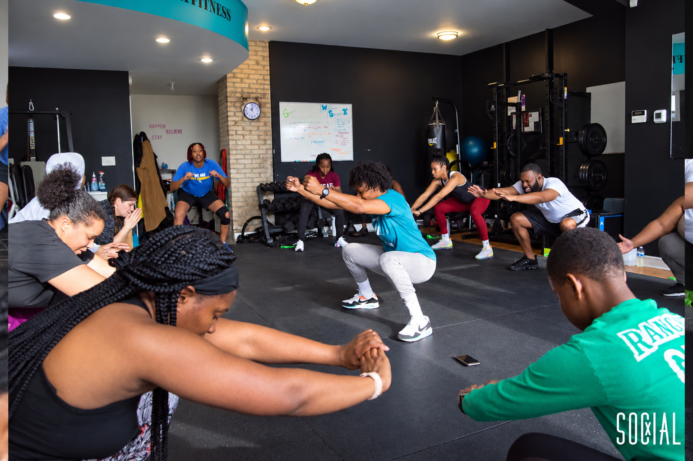
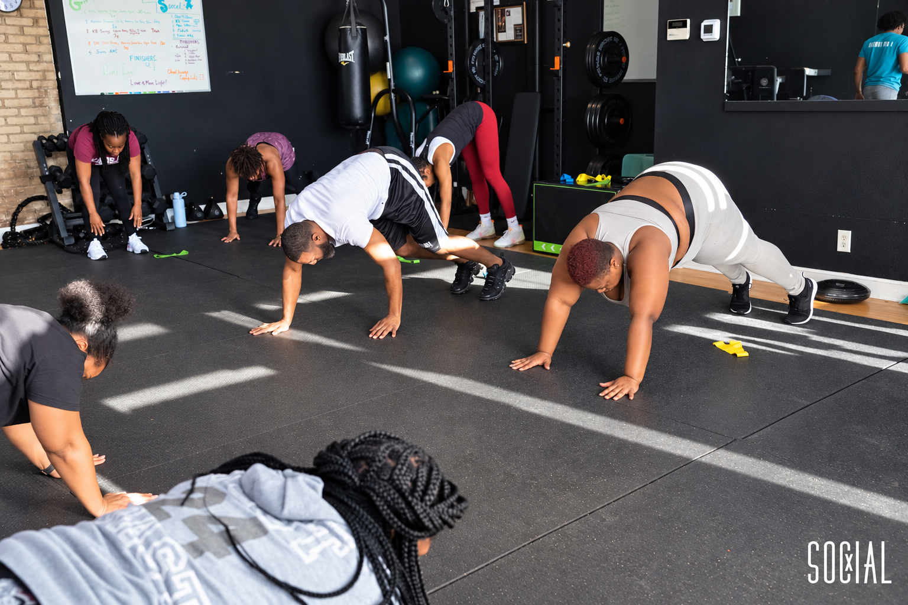
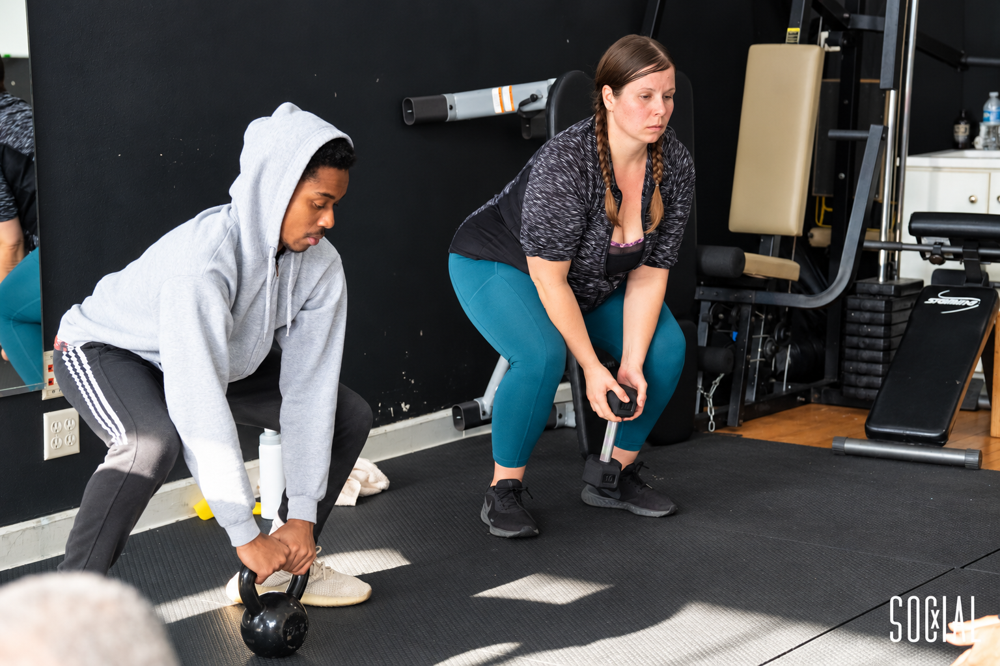

MILWAUKEE · SPORT MY FITNESS
INMOTION.
Movement. People. Milwaukee.
Videos, gym moments and the community behind Sport My Fitness.
EMPOWER THE BODY. STRENGTHEN THE MIND.
THE PEOPLE. THE ENERGY.
TOGETHER
IN THE GYM.
A few moments from the Sport My Fitness community.
Photography: Social X · 2024 event archive


FROM THE ARCHIVE · TMJ4
FITNESS FRIDAY.
Yoshi joins Live at Four to talk about stretching.
YOUR NEXT STEP
LET’S TRAIN.
Start a conversation with Yoshi.